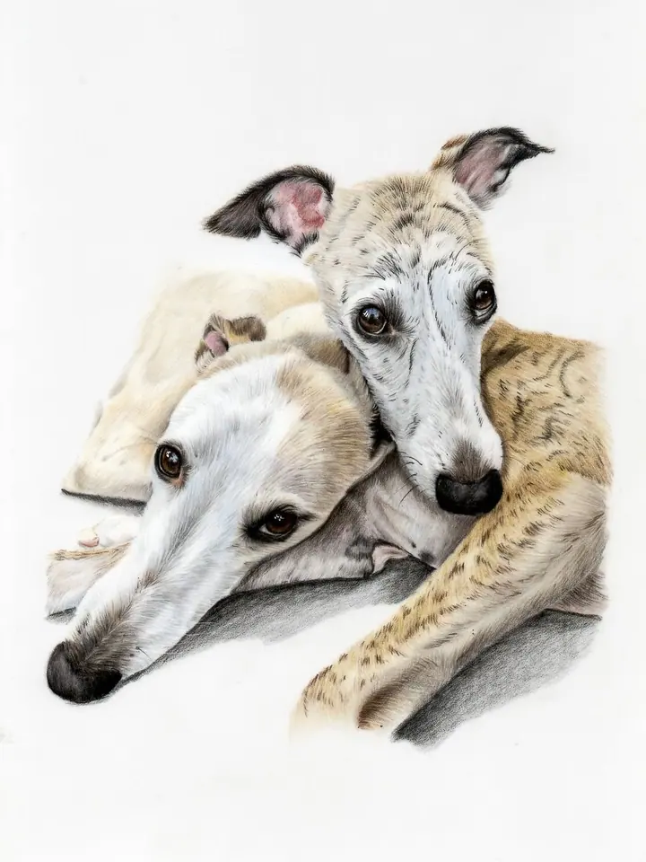
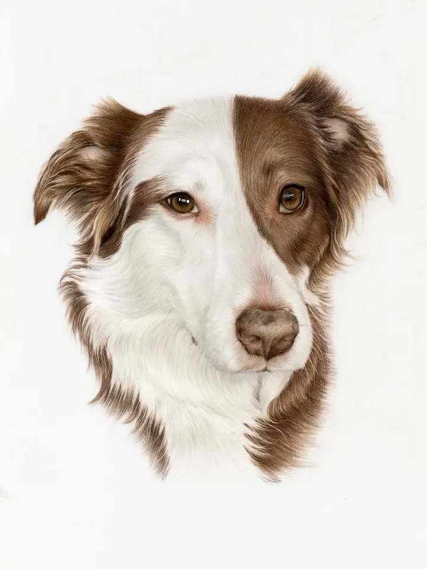
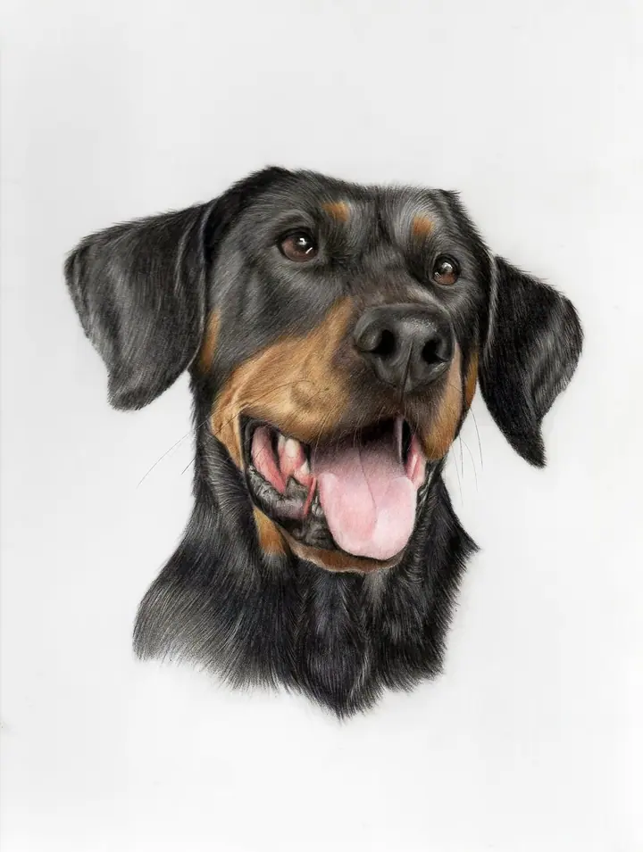
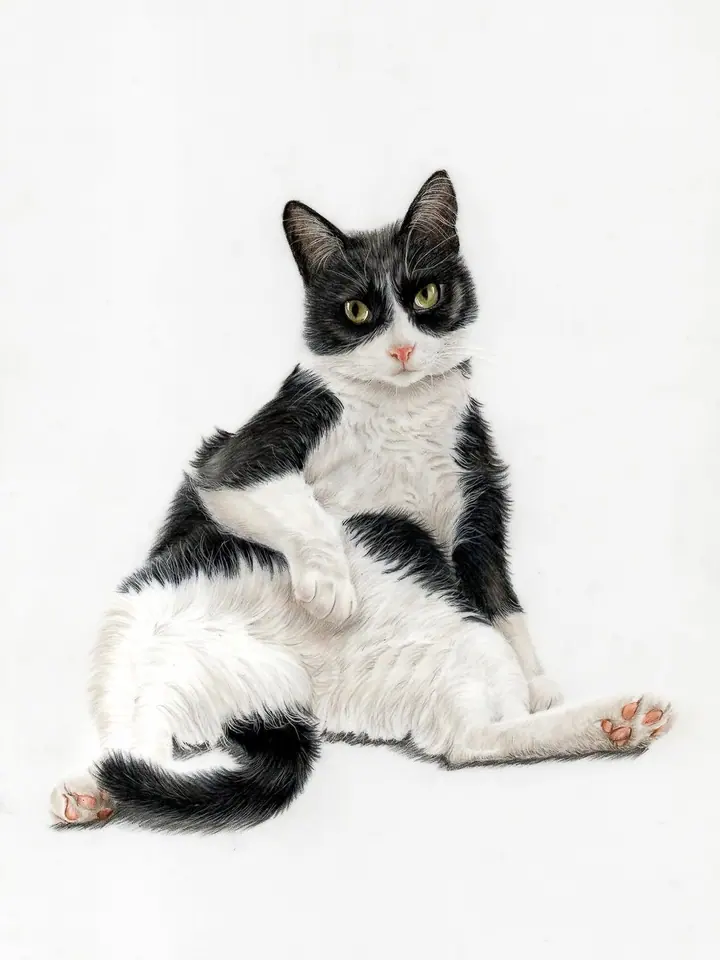
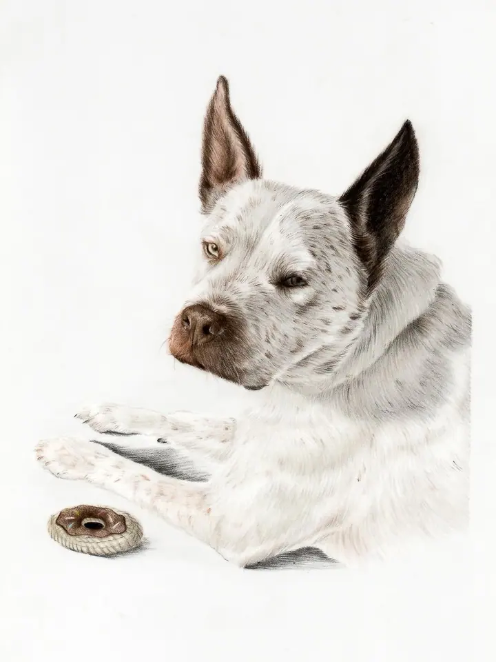
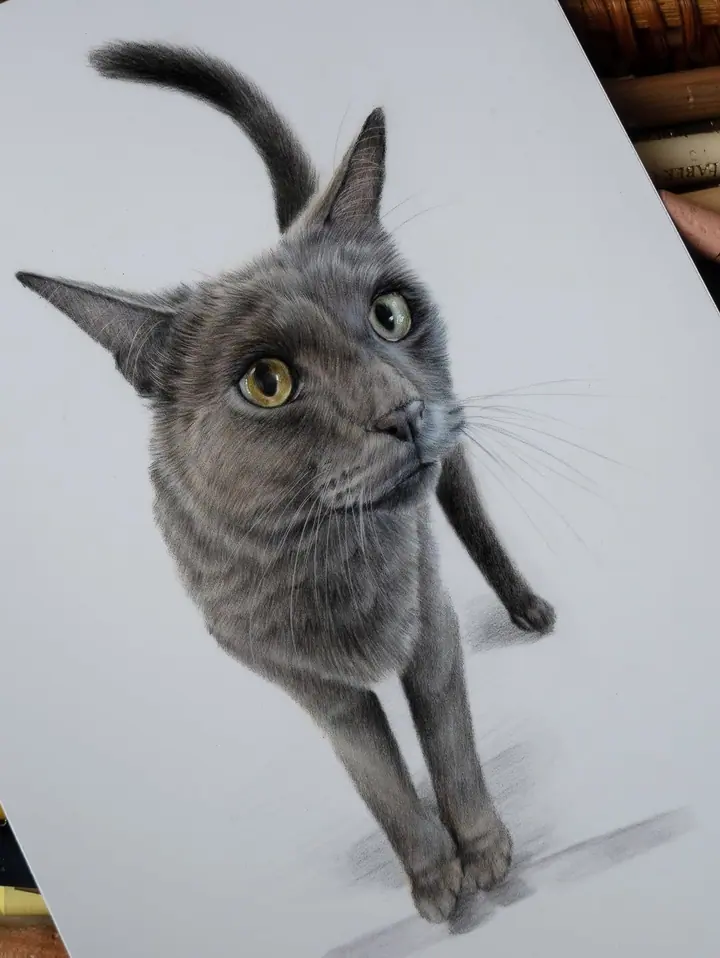

Barevné portréty na zakázku
Ručně kreslený portrét vašeho mazlíčka barevnými pastelkami podle vašich fotek, v několika velikostech. Snažím se zachytit jeho povahu, výraz a všechno, co ho dělá výjimečným.





Jmenuji se Hannah a kreslím portréty zvířat barevnými pastelkami a grafitem. Pracuji ve svém domácím ateliéru na zahradě na anglickém venkově a v každé kresbě hledám povahu vašeho psa nebo kočky.
Více o mně
„Když mi ukazujete, jak moc své mazlíčky milujete, cítím to taky.“
— Hannah
Ručně kreslený portrét vašeho mazlíčka barevnými pastelkami podle vašich fotek, v několika velikostech. Snažím se zachytit jeho povahu, výraz a všechno, co ho dělá výjimečným.
Malé barevné portréty, protože to nejlepší se vejde i do malého balení. Místa jsou omezená, proto se zapisujte na čekací listinu.
Detailní kresba tužkou, nadčasová technika, se kterou jsem začínala a kterou mám pořád ráda. Vybrat si můžete z několika velikostí.
Kromě portrétů na zakázku kreslím i ilustrace zvířat a nabízím z nich umělecké tisky.
Umění bylo vždycky velkou součástí mého života a zvířata se přirozeně stala mou největší inspirací. Začínala jsem v šestnácti, kdy jsem kreslila mazlíčky svých kolegů jako vánoční dárky. Z koníčku se postupně stalo malé podnikání a dnes tvořím ve svém ateliéru na zahradě za domem.
Vystudovala jsem obor Art & Design na vysoké škole v Cheltenhamu a odešla s vyznamenáním a velkou láskou ke grafitu. První roky jsem kreslila hlavně tužkou, v posledním roce jsem přidala barevné pastelky a mini portréty, které díky sociálním sítím viděly už přes půl milionu lidí.
Doma mám dvě border kolie, které nade vše miluji. Ráda se o zvířatech, která kreslím, dozvím co nejvíc, abych do kresby dostala jejich povahu. Nejde mi jen o podobu, ale o to, abyste v obrázku poznali právě toho svého mazlíčka.
Zanechte mi e-mail a ozvu se, jakmile otevřu objednávky. Velké portréty na zakázku bude možné rezervovat v listopadu, a to už na rok 2027.
Pošlete mi fotky, podle kterých budu kreslit. Na webu najdete návod, jak je pořídit, aby na nich byly vidět detaily.
Řekněte mi, jaký váš mazlíček je. Čím víc o něm vím, tím víc jeho povahy dokážu dostat do kresby.
Portrét kreslím celý ručně, s důrazem na srst, oči a výraz. Hotový obrázek pak putuje k vám domů.
Barevný portrét na zakázku začíná na 100 £, grafitový portrét na 40 £. Výsledná cena záleží na zvolené velikosti.
Na letošní Vánoce mám plno. Objednávky barevných portrétů se znovu otevřou v listopadu 2026 s termíny na rok 2027. Zapište se na čekací listinu a dám vám vědět jako prvním.
Kreslím psy, kočky i další zvířata. Důležité je, abych měla dobré fotky a něco málo věděla o jeho povaze.
Ano, portrét je krásný dárek. Vánoční dárkové poukazy budou brzy k dispozici.
minipetportraits@theartjogging.com
Anglický venkov · Velká Británie